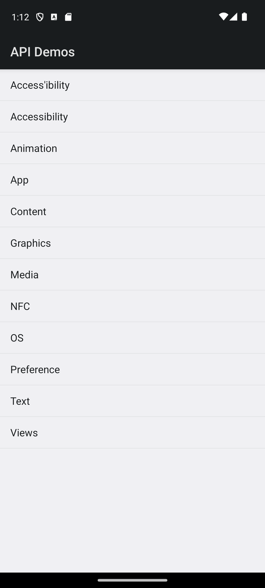
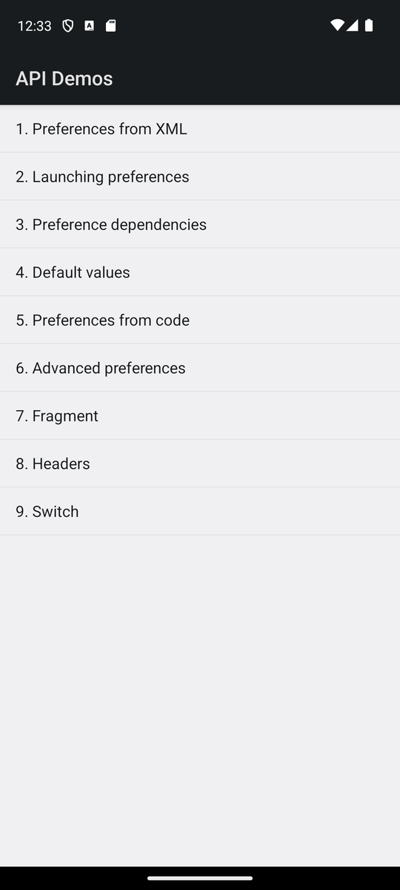
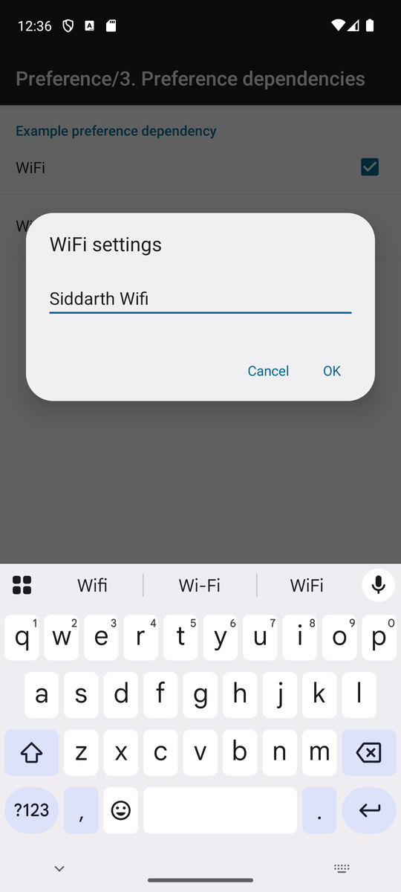

An AI agent that explores an Android app, writes manual test cases, and runs them only after a human approves them, with a screenshot for every step.
Manual test cases are slow to write and easy to get wrong. This agent looks at a real Android app the way a tester does: it opens the app, moves through the screens, writes clear test cases from what it saw, and then runs them on the device. Every step leaves screenshot evidence.
The AI never runs anything on its own authority. Test cases run only after a human has reviewed and approved them, and the device server checks that approval cryptographically before every test.
Taps through the app and writes an exploration map
Turns the map into structured test cases
Review, approve, SHA-256 recorded
Runs approved steps, one screenshot each
Pass / fail per test with evidence
A coordinator routes each request to either the explore-and-design team or the executor. The two jobs never share one automatic chain, so execution can't start by accident.
The agents reach the phone only through a custom MCP server that wraps Appium. It gives the model a compact list of what is on screen, about 13.6 KB of raw XML shrunk to 1.8 KB.
root coordinator (LlmAgent) ├─ explore_and_design → explorer → test_designer → proposed_tests.json │ (human: approve.py → approved_tests.json + SHA-256) └─ executor → MCP server --execute → Appium → Android emulator
In execute mode the device refuses every tap until the approved test file matches the SHA-256 hash recorded at approval. If someone edits the file after approval, execution stops.
The model types placeholders such as {{PASSWORD}}. The device server swaps in the real value and hides it again from everything the model reads.
Password, PIN and OTP fields are blacked out from the live screen before a screenshot is first written to disk.
The agent can only act on the app under test, only on elements from the latest screen, and only within a fixed number of steps per test.
Screenshots taken through the agent's own screenshot tool on Appium's public ApiDemos sample app. Client-app login and OTP screens are never published.



| Check | Result | Detail |
|---|---|---|
| Automated tests | 64 passing | Screen parsing, guards, approval gate, masking, re-runs, agent wiring |
| Device server end to end | Passed | Launch, read screen, tap, scroll, type, back, assert, screenshot on the emulator |
| Approved execution | Passed | Fresh start per test, test continuing from the previous one, re-running only failed tests |
| Agent exploration | Partial | The AI explorer navigated Home → Preference → sub-screens by itself, then stopped at the model's free-tier daily request limit |
| Full evaluation (M1–M8) | Pending | Published here after the complete explore → approve → execute run |